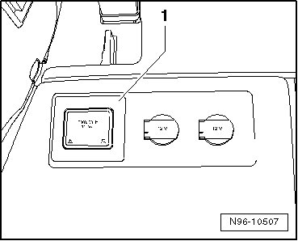
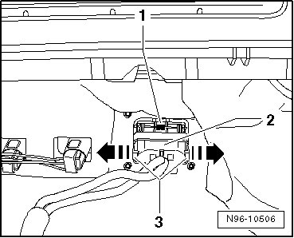
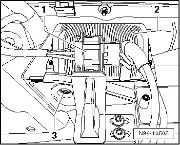

Converter With Socket, 12V and 230V
Luggage Compartment Lamps and Switches
Converter with Socket, 12V and 230V
Socket 12V, 230V - 1 - is installed in side wall trim on right side in luggage compartment. Converter is installed on a retainer on right rear wheel housing and is joined permanently to the socket.

CAUTION!
• The Converter with Socket, 12V, 230V (U13) housing contains chargeable capacitors.
• There is a danger of electric shock.
• The housing of Converter with Socket, 12V, 230V (U13) must not be opened under any circumstances.
Special tools, testers and auxiliary items required
• Trim removal wedge (3409)
• When removing and installing components in a visible area (switches, covers, trim, etc.), mask off the areas at which a prying tool (trim removal wedge (3409), screwdriver) will be positioned, using commercially available adhesive tape.
• No repairs may be performed on the harness connector, on the wires and the 230V-outlet.
• If there is a fault at harness connector, at wires, at 230V-socket or in the converter, the complete unit must always be replaced.
Removing
- Switch off ignition, switch off all electrical consumers and remove ignition key.
- Remove right side panel trim in luggage compartment
- Push the two retaining tabs - 3 - outward in - direction of arrow - and pull socket - 2 - toward rear out of socket mount - 1 - in side trim.

• Outlet mount is joined permanently to the side trim.
- Disengage and disconnect harness connector - 1 - at converter - 2 -.

- Remove mounting bolt - 3 - and remove converter upward from bracket.
Installing
Install in reverse order of removal, noting the following:
- When inserting converter, make sure that guide rails on converter sit correctly on bracket and converter fits securely after tightening the mounting bolt - 3 -.